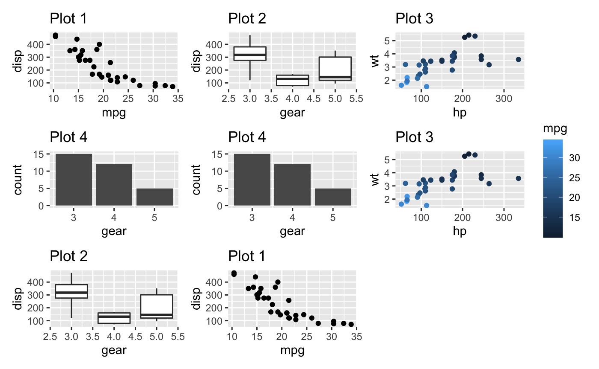
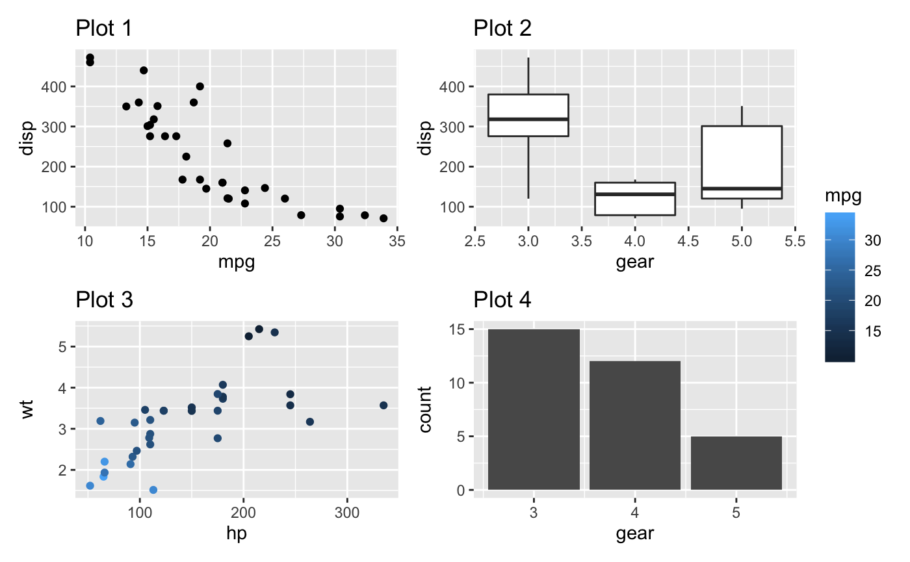
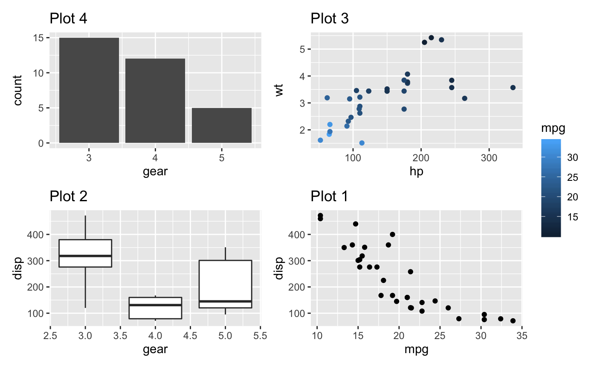
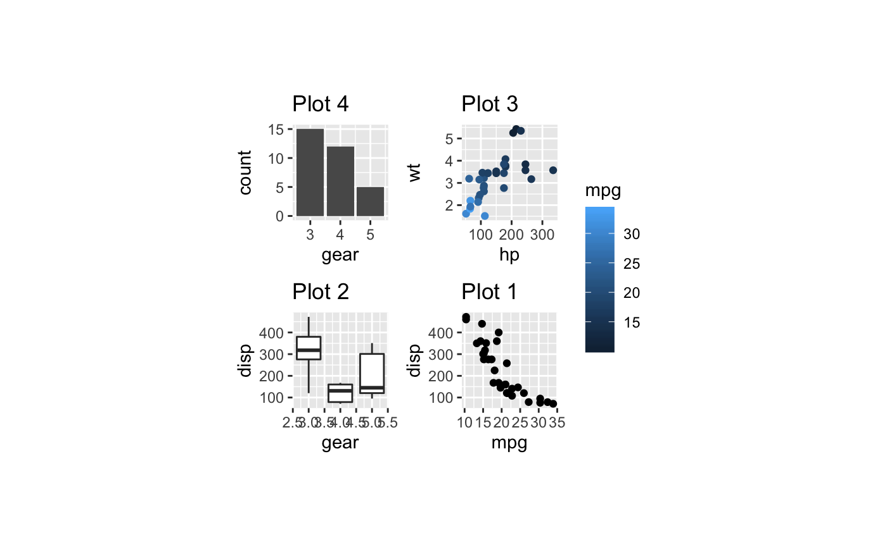
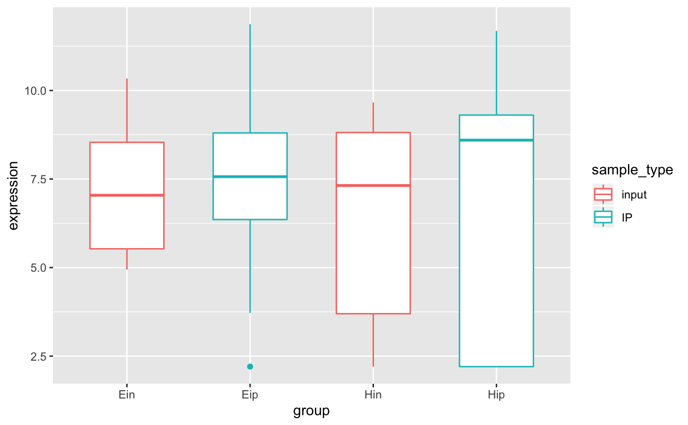
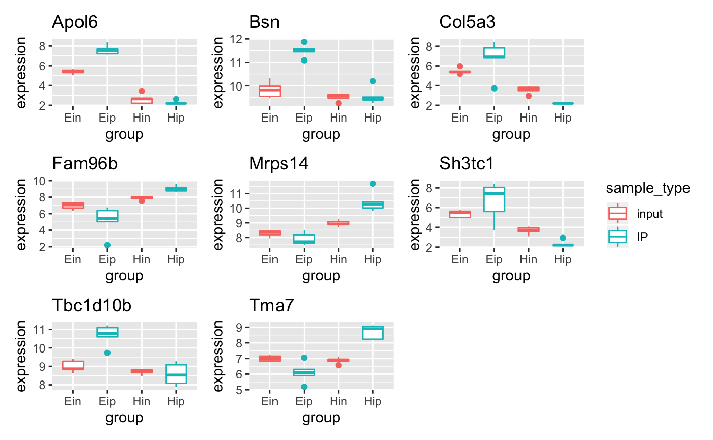
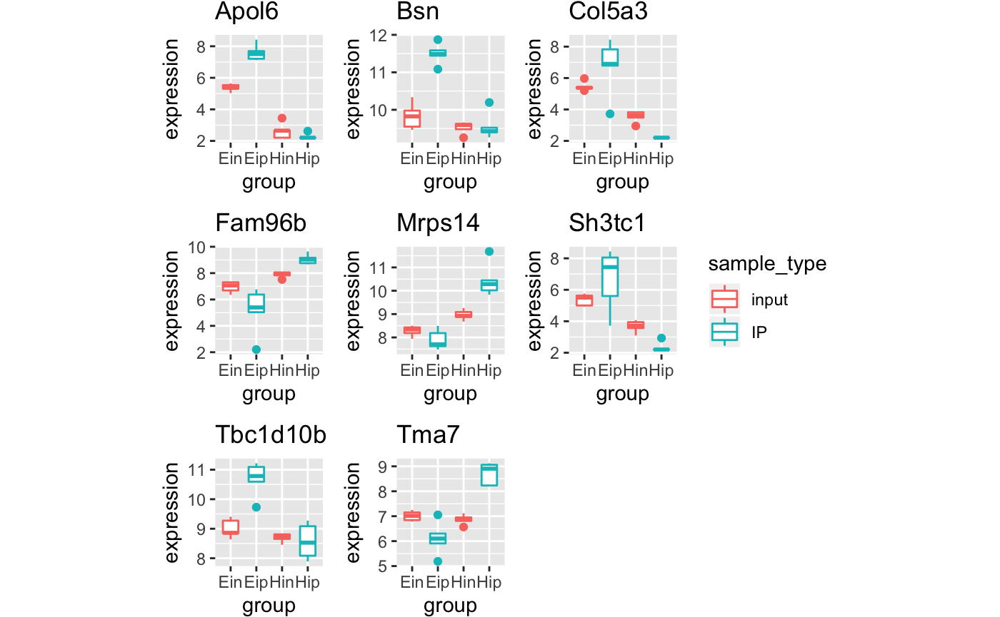
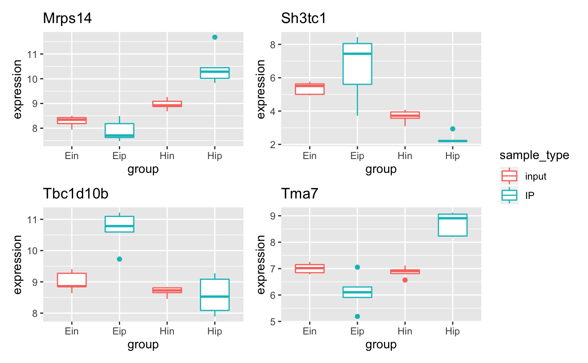
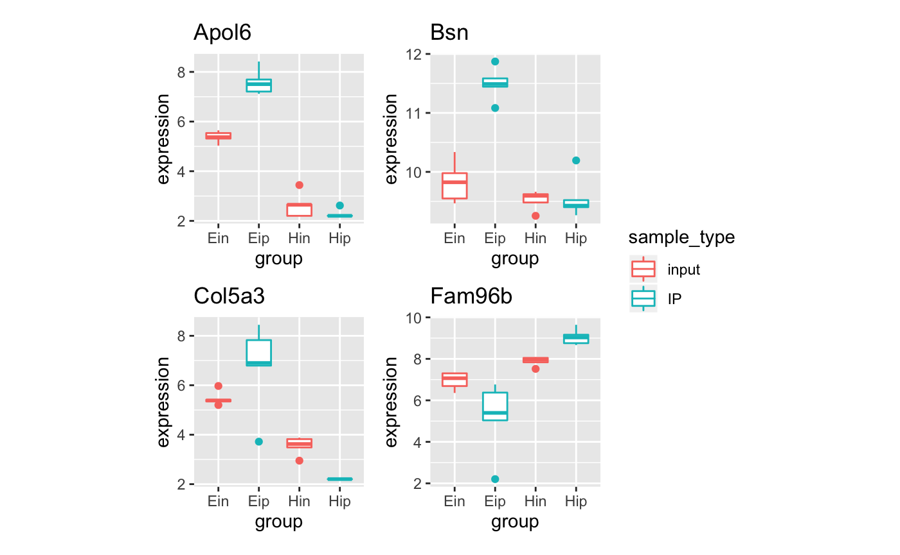
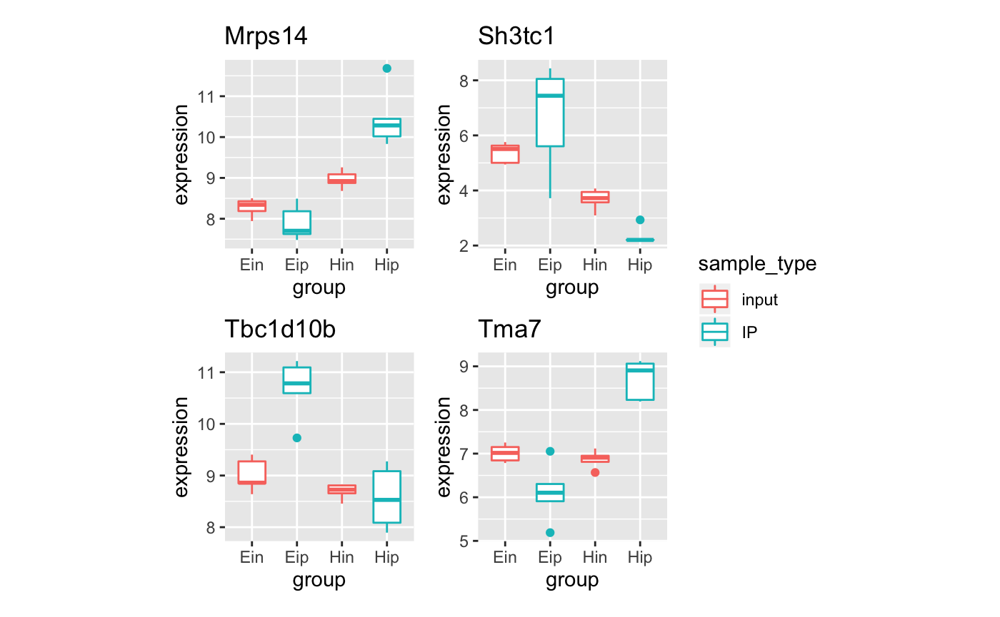

Generate demo plots
# devtools::install_github("thomasp85/patchwork")
library(tidyverse)
library(patchwork)
library(multipage)
p1 <- ggplot(mtcars) +
geom_point(aes(mpg, disp)) +
ggtitle('Plot 1')
p2 <- ggplot(mtcars) +
geom_boxplot(aes(gear, disp, group = gear)) +
ggtitle('Plot 2')
p3 <- ggplot(mtcars) +
geom_point(aes(hp, wt, colour = mpg)) +
ggtitle('Plot 3')
p4 <- ggplot(mtcars) +
geom_bar(aes(gear)) +
ggtitle('Plot 4')
patchwork1 <-
p1 + p2 + p3 + p4 +
plot_layout(
ncol = 4,
widths = unit(c(50, 25, 50, 25), "mm"),
heights = unit(50, "mm"),
guides = "collect"
)
patchwork2 <-
p1 + p2 + p3 + p4 +
plot_layout(
ncol = 4,
widths = unit(c(50, 25, 50, 205), "mm"),
heights = unit(25, "mm"),
guides = "collect"
)
patchwork3 <-
p1 + p2 + p3 + p4 +
plot_layout(
ncol = 4
)# test bro_get_ggsize -----------------------------------------------------
multipage:::get_ggsize(p1)
#> width height
#> NA NA
multipage:::get_ggsize(list(p1, p2, p3))
#> width height
#> NA NA
multipage:::get_ggsize(list(patchwork1, patchwork2, patchwork3))
#> width height
#> NA NA
multipage:::get_ggsize(patchwork1)
#> width height
#> 226.42008 70.28865
multipage:::get_ggsize(patchwork2)
#> width height
#> 406.42008 45.28865
multipage:::get_ggsize(patchwork3)
#> width height
#> NA NA# test get_ggsize --------------------------------------------------
# get_ggsize(p1, "test.pdf")
# get_ggsize(list(p1, p2, p3), "test.pdf")
# get_ggsize(list(patchwork1, patchwork2, patchwork3), "test.pdf")
# get_ggsize(patchwork1, "test.pdf")
# get_ggsize(patchwork2, "test.pdf")
# get_ggsize(patchwork3, "test.pdf")
#
# get_ggsize(list(p1, p2, p3), "test.pdf")
# get_ggsize(list(p1, p2, p3), "test.png")
# get_ggsize(list(p1, p2, p3), "test.png", burst_to_multiple_files = TRUE)
#
# get_ggsize(list(patchwork1, patchwork2, patchwork3), "test.pdf")
# get_ggsize(list(patchwork1, patchwork2, patchwork3), "test.png")
# get_ggsize(list(patchwork1, patchwork2, patchwork3), "test.png", burst_to_multiple_files = TRUE)# test multipage_plots -----------------------------------------------
plots <- list(p1, p2, p3, p4, p4, p3, p2, p1)
plots %>% multipage_plots()
#> [[1]]


#>
#> [[2]]
plots %>% multipage_plots(ncol = 2, nrow = 2,
width = unit(20, "mm"), height = unit(20, "mm"))
#> [[1]]
#>
#> [[2]]
# plots %>% layout_plots(ncol = 2, nrow = 2, width = unit(20, "mm"), height = unit(20, "mm")) %>%
# multipage_plots("test.pdf")
#
# plots %>% layout_plots(ncol = 6, nrow = 6, width = unit(40, "mm"), height = unit(40, "mm")) %>%
# multipage_plots("test.pdf")
#
# plots %>% layout_plots(ncol = 3, nrow = 3) %>%
# multipage_plots("test.pdf")
#
# plots %>% layout_plots(ncol = 6, nrow = 6) %>%
# multipage_plots("test.pdf")# test multipage_facets -----------------------------------------------
bro_data_exprs_sel <-
bro_data_exprs %>%
nest(data = -external_gene_name) %>%
filter(row_number() %in% c(1:4,20:23)) %>%
unnest(cols = c(data))
p5 <-
bro_data_exprs_sel %>%
ggplot(aes(group, expression, color = sample_type)) +
geom_boxplot(width = 0.6, position = position_dodge(width = 0.8))
p5

p5 %>% multipage_facets(facet_var = external_gene_name,
width = unit(20, "mm"), height = unit(20, "mm"))
#> [[1]]

#>
#> [[2]]
p5 %>% multipage_facets(facet_var = external_gene_name, ncol = 2, nrow = 2,
width = unit(35, "mm"), height = unit(35, "mm"))
#> [[1]]
#>
#> [[2]]
# p1 %>% multipage_facets(facet_var = cyl, ncol = 1, nrow = 1, width = unit(20, "mm"), height = unit(20, "mm")) %>%
# save_multipage("test.pdf")
#
# p1 %>% multipage_facets(facet_var = cyl, ncol = 2, nrow = 2, width = unit(40, "mm")) %>%
# save_multipage("test.pdf", height = 200)
#
# p1 %>% multipage_facets(facet_var = cyl, ncol = 2, nrow = 2, width = unit(40, "mm")) %>%
# save_multipage("test.pdf")
#
# p1 %>% multipage_facets(facet_var = cyl, ncol = 2, nrow = 2, width = unit(20, "mm"), height = unit(20, "mm")) %>%
# save_multipage("test.png")
#
# p1 %>% multipage_facets(facet_var = cyl, ncol = 2, nrow = 2) %>%
# save_multipage("test.png")